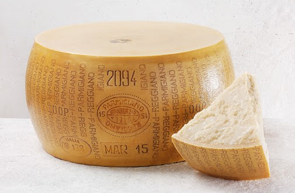

PARMIGIANO REGGIANO
FORMAGGI E CONTORNI

- Descrizione
- Il Parmigiano Reggiano è un formaggio a pasta dura DOP, prodotto con latte vaccino crudo, parzialmente scremato per affioramento, senza l'aggiunta di additivi.
La zona di produzione comprende le province di Parma, Reggio Emilia, Modena, Bologna a sinistra del fiume Reno e Mantova a sud del Po.
- Il formaggio può essere mangiato a scaglie o grattugiato. La stagionatura minima prevista dal disciplinare è di 12 mesi. Stagionature tipiche sono quelle di 24 e 30 mesi, ma possono arrivare anche a 36, 48, 72 mesi e oltre.
- Produzione
- Attualmente gran parte della produzione del Parmigiano-Reggiano avviene con latte prodotto da vacche Frisone, introdotte nel territorio nel corso del Novecento, ma la razza tradizionalmente sfruttata per la produzione del formaggio è la Reggiana rossa, a triplice attitudine (latte, lavoro e carne), introdotta probabilmente dai Longobardi.
La sua produzione di latte è poco più della metà rispetto alla Frisona, sebbene di qualità superiore, e questo ne spiega l'abbandono, unito anche al fatto che la sua forza e l'attitudine al lavoro sono divenute inutili con l'avvento dei trattori.
Alcuni piccoli caseifici ne usano ancora il latte per produrre un formaggio di qualità superiore, da cui l'Associazione Nazionale Allevatori Bovine di Razza Reggiana.
Una forma di formaggio Parmigiano-Reggiano deve obbligatoriamente avere un peso variabile compreso tra 30 kg e oltre 40 kg, anche se mediamente s'aggira sui 40 kg. Per produrre una forma di Parmigiano-Reggiano servono circa 550 litri di latte con una media di 14 litri per ogni chilogrammo di formaggio prodotto.
Torna alla pagina iniziale
by Bartoli Matteo